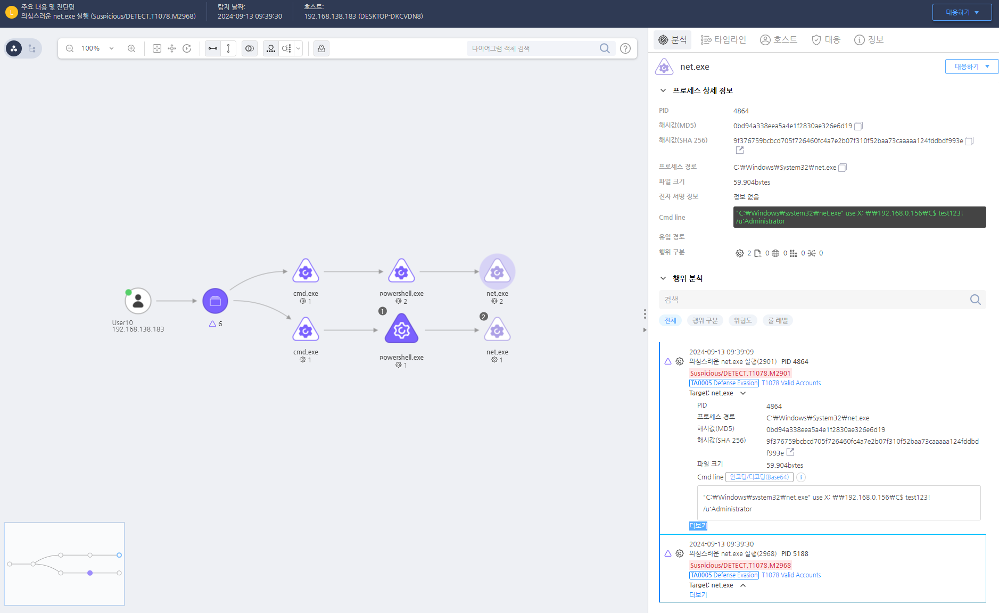

T1021.002.01 원격 서비스(SMB)
D3FEND
MITRE ATT&CK 액션을 기준으로 대응 방안을 작성
Detection
Action = "ProcessCreate" AND
CurrentProcess = "powershell.exe" AND
TargetProcess = "net.exe" AND
Cmdline = "use"
Detection(EDR)

Response
필요한 SMB 공유 비활성화 및 관리자 공유에 대한 접근 권한을 최소화하여 모니터링을 강화한다.
Mitigations
SMB 비활성화 또는 제한
- 불필요한 SMB 버전 비활성화: SMBv1은 보안에 취약하므로 SMBv1을 비활성화하고 SMBv2나 SMBv3를 사용하도록 설정합니다. SMBv1은 여러 취약점을 가지고 있어 공격자에게 노출될 위험이 큽니다.
Set-SmbServerConfiguration -EnableSMB1Protocol $false 명령을 사용하여 SMBv1을 비활성화합니다.
- SMB 서비스 비활성화: 내부 네트워크에서 SMB 서비스를 사용하지 않는 경우, SMB 프로토콜 자체를 비활성화하여 원격 접근을 차단할 수 있습니다.
Set-Service -Name "LanmanServer" -StartupType Disabled 명령으로 LanmanServer 서비스를 비활성화합니다.
네트워크 접근 제어 및 필터링
- 방화벽 설정: SMB 서비스가 외부에서 접근할 수 없도록 방화벽을 설정하여 SMB 포트(기본적으로 TCP 445번 포트)가 외부에 노출되지 않도록 차단합니다. SMB는 LAN 환경에서만 사용해야 하므로 외부 접근을 차단하는 것이 중요합니다.
- 서브넷 및 VLAN 분리: SMB 서비스가 필요한 시스템을 내부 서브넷 또는 VLAN에만 배치하여 외부 공격자가 이를 탐지하고 접근하는 것을 차단합니다.
- IP 화이트리스트 적용: SMB 서비스에 접근할 수 있는 IP 주소를 제한하여 특정 신뢰된 IP 주소만 SMB 서비스에 접근할 수 있도록 설정합니다.
강력한 인증 및 암호화 사용
- NTLMv2 및 Kerberos 사용: NTLMv2와 Kerberos와 같은 강력한 인증 방법을 사용하여 SMB 세션의 보안을 강화합니다. NTLM의 이전 버전인 NTLMv1은 취약하므로 사용하지 않도록 설정합니다.
- 암호화 활성화: SMB 트래픽을 암호화하여 Man-in-the-Middle (MITM) 공격을 방지합니다. SMB 3.0 이상에서는 암호화 기능이 기본적으로 제공되므로 이를 활성화하여 네트워크 상에서의 데이터 전송을 안전하게 보호합니다.
권한 및 접근 제어 강화
- SMB 공유 권한 제한: SMB 공유 폴더에 대한 권한을 최소화하고, 읽기/쓰기 권한을 필요한 사용자만에게 부여하여 불필요한 접근을 차단합니다.
- ACL 설정: 파일 시스템 권한(NTFS)과 공유 권한을 함께 사용하여 파일 및 폴더에 대한 접근을 제한합니다. 이를 통해 민감한 파일이나 시스템 자원에 대한 비정상적인 접근을 차단할 수 있습니다.
- 관리자 계정 사용 제한: SMB 공유에 대한 관리자 권한을 제한하여, 관리자 계정이 불필요하게 사용되지 않도록 하고, 특권 계정 관리(PAM)를 사용하여 관리자 권한의 접근을 제한합니다.
SMB 로그 및 활동 모니터링
- 로그 파일 모니터링: Windows Event Logs에서 SMB 관련 이벤트(예: 5140, 5145)를 모니터링하여 이상한 접속 시도를 실시간으로 탐지합니다. 이를 통해 원격 시스템에 대한 비정상적인 접근을 조기에 감지할 수 있습니다.
- SIEM 시스템 사용: SIEM (Security Information and Event Management) 시스템을 사용하여 SMB 트래픽과 관련된 모든 이벤트를 중앙에서 관리하고, 공격 징후를 실시간으로 감지합니다.
원격 관리 및 서비스 접근 제어
- RDP 및 기타 원격 서비스 제한: RDP(원격 데스크탑 프로토콜) 및 SMB와 같은 원격 서비스에 대한 접근을 제한하여 원격 관리 도구가 아닌 방법으로만 시스템에 접근할 수 있도록 합니다. MFA (Multi-Factor Authentication)를 사용하여 추가적인 보안 계층을 추가합니다.
- SSH 대신 PowerShell 사용: 원격 관리 시 SSH를 사용하여 SMB를 우회하거나 제어하지 않고, PowerShell Remoting을 사용하여 원격 세션을 제어합니다.
보안 패치 적용
- 정기적인 보안 업데이트: SMB 관련 취약점이 악용될 수 있으므로, Windows 업데이트 및 보안 패치를 주기적으로 적용하여 SMB 프로토콜의 취약점을 방지합니다.
- CVE 패치 적용: 알려진 SMB 관련 취약점에 대한 CVE(Common Vulnerabilities and Exposures) 패치를 즉시 적용하여 공격자가 취약점을 악용할 수 없도록 합니다.
Ransomware 및 Malware 탐지 솔루션 강화
- EDR/XDR 사용: Endpoint Detection and Response (EDR) 및 Extended Detection and Response (XDR) 솔루션을 사용하여, SMB를 통해 악성코드나 랜섬웨어가 전파되는 경로를 차단하고 이를 탐지합니다.
Affected Techniques
Action 실행시 함께 영향을 받는 다른 Techniqes
| ATT&CK |
| T1059.001 |
| T1049.000 |
| T1135.000 |
| T1070.005 |
| D3FEND |
| D3-NTA Network Traffic Analysis |
| D3-NTF Network Traffic Filtering |
| D3-ITF Inbound Traffic Filtering |
| D3-OTF Outbound Traffic Filtering |